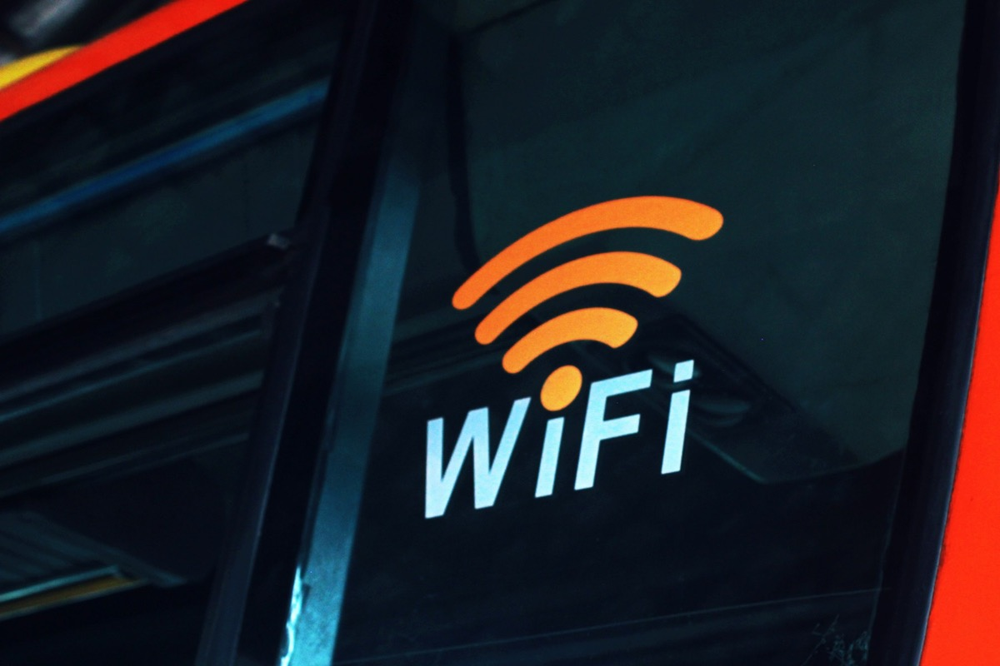

Redes & Wi-Fi
Rede que não cai quando você mais precisa.
Instalação e configuração de rede cabeada, otimização de sinal Wi-Fi e suporte técnico.

Rede cabeada
Instalação e configuração organizadas.
Cabos, switches e pontos de rede instalados e configurados para uma conexão estável no trabalho e em casa.
- Instalação de rede cabeada
- Configuração de switches
- Cabeamento organizado

Wi-Fi
Otimização de sinal onde você trabalha.
Configuramos o roteador e otimizamos o sinal Wi-Fi para a conexão ficar firme no seu ambiente.
- Configuração do roteador
- Otimização do sinal Wi-Fi
- Suporte técnico

Sintomas e soluções
O que está acontecendo com a sua rede?
O Wi-Fi cai ou está fraco
Configuração do roteador e otimização do sinal Wi-Fi.
Cabos bagunçados ou sem ponto de rede
Instalação, organização e configuração da rede cabeada.
A rede vive instável e ninguém sabe por quê
Suporte técnico e acompanhamento para achar e corrigir a causa.
Acompanhamento
Suporte contínuo, antes do problema aparecer.
Monitoramento preventivo e assistência personalizada para você e sua empresa.
- Monitoramento preventivo
- Suporte contínuo
- Assistência personalizada

Orçamento sem compromisso
Rede firme, equipe tranquila.
Atalho: W WhatsApp · O orçamento